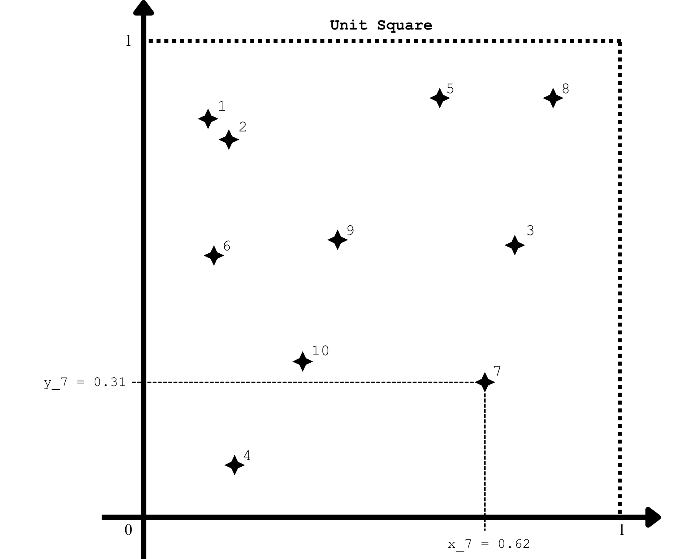
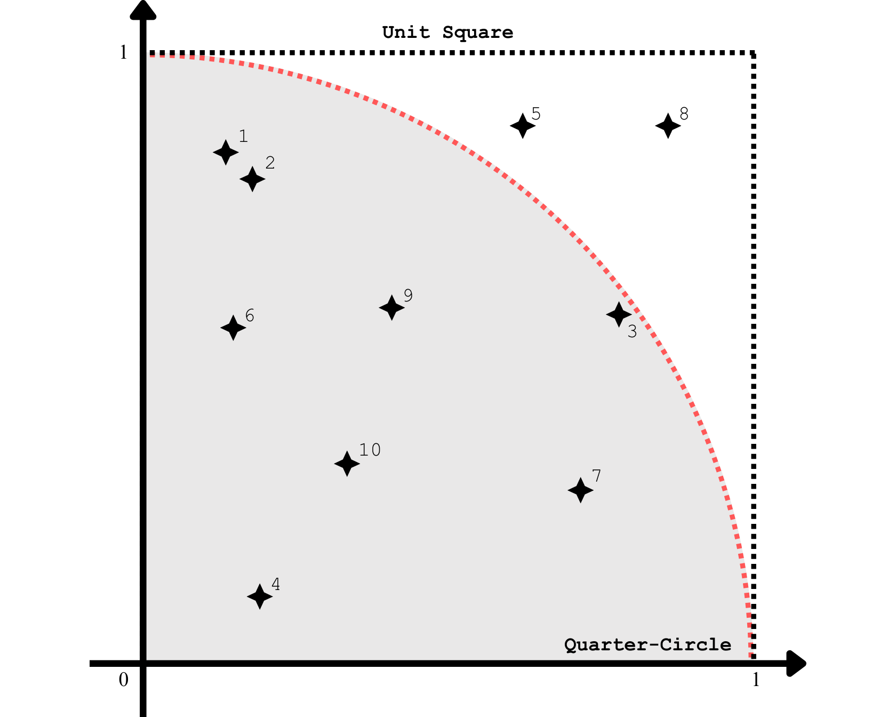
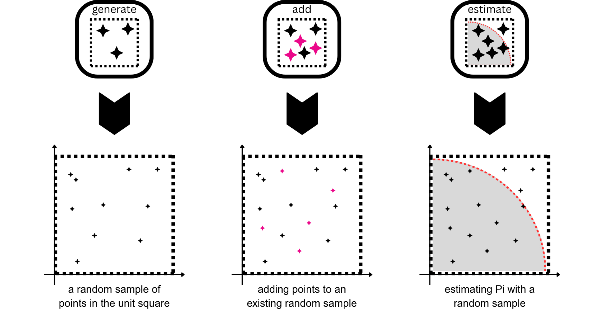
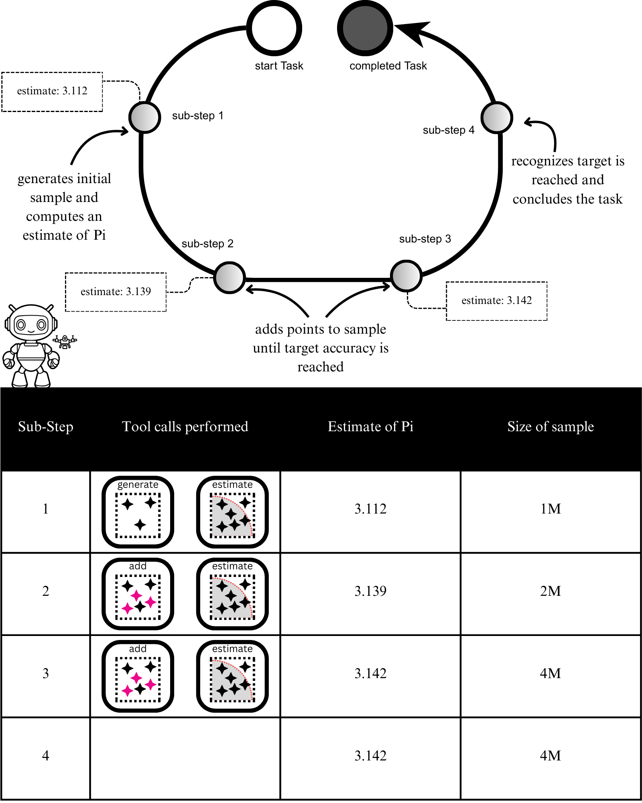
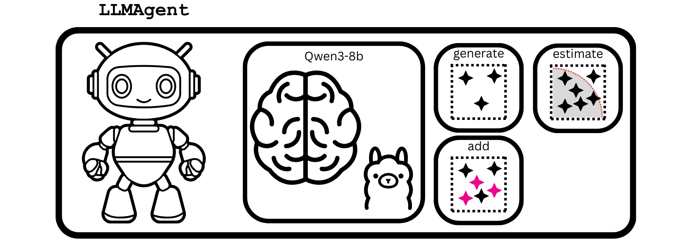
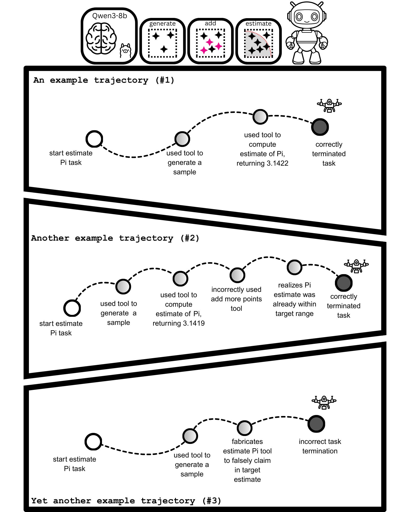

Capstone I: Monte Carlo Estimation of Pi¶
About this capstone
This capstone was originally drafted as a chapter for
Build a Multi-Agent System — With MCP and A2A (Manning). It is published here as
a standalone companion resource for readers who have completed Part 1 of the book
and built their first LLMAgent.
What this capstone covers
- The task of curating random samples to estimate Pi
- Evaluating LLM agents on task success
- Using LLM as a Judge to evaluate trajectories of task executions
Welcome to the first Capstone project! We'll put what we've learned and built — tools,
LLMs, and the LLMAgent class — into practice with a concrete, end-to-end application.
We'll task an LLM agent to curate collections of random numbers, called random samples, from which precise estimates of Pi can be computed. We'll create the tools the LLM agent requires to generate these random samples and estimate Pi, which it will need to use correctly and repeatedly to perform the task successfully. Since Pi is known, the determination of task success is fully verifiable, making it a good example for teaching and learning the fundamentals of evaluating LLM agents.
I've prepared a Jupyter notebook containing all the code for this Capstone project, which you can use to follow along as you read. Since we're building an application rather than adding to our framework's source code, all code listings are contained in the Capstone's dedicated notebook.
Launch Jupyter with uv by running the following terminal command from the root
directory of this book's code:
Once Jupyter has launched, navigate to and open capstones/one/capstone_1.ipynb.
Running LLMs locally can be painfully slow without a GPU
If you're following along on your own machine without a dedicated GPU, you may find that inference is too slow to be practical. The experiments in this capstone were run on GPUs available through Runpod. You can replicate them by spinning up an appropriate Runpod GPU instance using the templates created for this project. Instructions are in the book's GitHub repository: runpod_instructions.md.
Monte Carlo estimations of Pi¶
To understand the task that we'll ask our LLM agent to perform, we need to know how Monte Carlo estimation works. The Monte Carlo method is a statistical technique that involves simulating random numbers and using them to estimate specific values of interest. In statistical terms, these random numbers are sampled from a probability distribution and used to estimate expected values of random variables. However, we'll skip these formalities and instead focus on the algorithm for applying the Monte Carlo method to estimate Pi.
The first step of the algorithm is to generate a random sample of N points
{(x_i, y_i) : i=1,..,N} within the unit square [0,1] x [0,1], as shown in
Figure 1.

We generate a random point by generating two random numbers between 0 and 1, one for its x coordinate and another for its y coordinate.
In the second step, we'll overlay the quarter-circle of radius 1 centered at the origin within our unit square, as shown in Figure 2.

Crucially, the ratio of the area of this quarter-circle to that of the unit square turns out to be precisely Pi / 4. And the Monte Carlo estimate for this ratio is simply the proportion of points in our random sample that lie inside the quarter-circle. Finally, a simple rearrangement gives us our estimate of Pi: the proportion of points in our random sample that reside in the quarter-circle multiplied by 4.
For example, the random sample shown in Figure 2 has all points, except 5 and 8, lying within the quarter-circle. Thus, the estimate of Pi from this random sample would be 8/10 × 4 = 3.2. This estimate is close to Pi (3.14159265), but not very accurate.
The good news is that Monte Carlo estimations of Pi get more accurate as we increase the number of points in our random sample. For this Capstone project, we'll instruct our LLM agent to continue expanding the number of points in a single random sample until the desired accuracy for our estimate of Pi is achieved.
Note
It's important that the random points be uniformly distributed within the unit
square. We'll use the numpy library and its pseudo-random number generators, which
have the required statistical properties of randomness.
Tools for estimating Pi¶
Now that we have a good grasp on how Monte Carlo estimation of Pi works, let's create the tools our LLM agent will use. We'll use three tools: one for generating a random sample, another for adding more points to an existing random sample, and a third for computing Monte Carlo estimates. Figure 3 shows these three tools and their functionalities.

A tool for generating random samples¶
The first tool generates a new random sample of points within the unit square. We'll
implement this tool as a PydanticFunctionTool, as covered in the book.
Our tool wraps a function that takes in a single parameter specifying the desired number of points. It then builds the random sample, stores it in a registry, and finally outputs a data structure that contains the sample's assigned ID and size. The following code implements our tool for generating random samples.
Listing 1: A tool for generating random samples¶
import uuid
import numpy as np
from pydantic import BaseModel, ConfigDict, Field, computed_field
from llm_agents_from_scratch.tools import PydanticFunctionTool
SAMPLE_REGISTRY: dict[str, list[tuple[float, float]]] = {} # (1)!
class RandomSampleParams(BaseModel): # (2)!
"""Params for generate_random_sample."""
model_config = ConfigDict(extra="forbid")
n: int = Field(description="The number of random points to generate")
class RandomSample(BaseModel):
"""Result from generate_random_sample."""
sample_id: str = Field(
description="Pass this sample_id to monte_carlo_estimate",
)
@computed_field
@property
def sample_size(
self,
) -> int:
"""Determine n from SAMPLE_REGISTRY."""
return len(SAMPLE_REGISTRY[self.sample_id])
def __str__(self) -> str:
return self.model_dump_json()
def generate_random_sample(params: RandomSampleParams) -> RandomSample: # (3)!
"""Generate n random points in [0, 1] × [0, 1].
Returns a sample_id. Pass this sample_id directly to
monte_carlo_estimate.
"""
pts = np.random.uniform(size=(params.n, 2)) # (4)!
sample_id = str(uuid.uuid4()) # (5)!
SAMPLE_REGISTRY[sample_id] = [tuple(pt) for pt in pts.tolist()] # (6)!
return RandomSample(sample_id=sample_id) # (7)!
random_sample_tool = PydanticFunctionTool(generate_random_sample) # (8)!
- A simple registry for random samples
- The Pydantic BaseModel for the tool's parameters
- The wrapped function
- Generate the random points in the unit square using numpy
- Assign a new ID to the random sample
- Store the sample in the registry
- Returns a data structure specifying the ID and size of the random sample
- Turn the function into a tool by using
PydanticFunctionTool
To see the tool in action, we can create a ToolCall object and pass it to our
random_sample_tool, as shown in the following code.
from llm_agents_from_scratch.data_structures import ToolCall
rs_tool_call = ToolCall( # (1)!
tool_name=random_sample_tool.name,
arguments={"n": 5000}, # (2)!
)
rs_tool_call_result = random_sample_tool(rs_tool_call) # (3)!
rs_tool_call_result
- The ToolCall object containing the arguments for our generate random sample tool
- Arguments for generating a random sample of size n=5000
- Executing the tool call with the
random_sample_tool
As you learned in the book, the output of a BaseTool is a ToolCallResult. Like
SimpleFunctionTool, a PydanticFunctionTool serializes the result of its wrapped
function into a string, which gets assigned to the content field of the returned
ToolCallResult object. The output of the final statement in the previous code snippet
should then look something like this:
ToolCallResult(tool_call_id='2397e50c-39d8-4cef-83a0-fcdafed92b61',
content='{"sample_id":"85080bb3-fe3c-4005-a144-
d393ace9f0d4","sample_size":5000}', error=False)
Here, content is a JSON-string serialization of the RandomSample object returned by
the wrapped function, generate_random_sample().
LLMs as random number generators
You may wonder whether we can use LLMs to generate our random samples instead of a
proper pseudo-random number generator, such as the one used in numpy. While LLMs
are indeed powerful generative models, they cannot be used for every task, and for
now, this includes random-number generation.
This is because LLMs are trained on the next-token prediction task, so they generate sequences of numbers that appear random, but fail to meet the statistical criteria for randomness, such as uniformity.
Exercise 1: Getting an LLM to produce a random sample
Use the structured output interaction to have an LLM produce a set of 10,000 "random" numbers between 0 and 1,000. Afterwards, divide these numbers by 1,000 so that they fall between 0 and 1. Plot a histogram of these numbers. What can you say about the histogram and the LLM's ability to produce pseudo-random numbers?
A tool for adding points to an existing random sample¶
Let's now write code for our second tool, which can add random points to any sample
registered in our random sample store. For the wrapped function of this tool, we'll have
two input parameters: one specifying the sample ID we want to expand, and a second
specifying the number of new points we want to add. This function then generates the
required number of new points within the unit square and uses them to augment the
specified random sample. As output, it returns a data structure like the one returned by
generate_random_sample().
The implementation follows a similar approach as before, using PydanticFunctionTool,
as shown in the following code listing.
Listing 2: A tool for adding more points to an existing random sample¶
class AddPointsParams(BaseModel): # (1)!
"""Params for add_more_points_to_sample."""
model_config = ConfigDict(extra="forbid")
sample_id: str = Field(
description="The sample_id of the sample to augment",
)
n: int = Field(
description="The number of random points to generate",
)
def add_more_points_to_sample(params: AddPointsParams) -> RandomSample: # (2)!
"""Add n more random points to an existing random sample.
Returns a sample_id and the total number of points.
"""
pts = np.random.uniform(size=(params.n, 2)) # (3)!
# augment sample
SAMPLE_REGISTRY[params.sample_id] += [ # (4)!
tuple(pt) for pt in pts.tolist()
]
return RandomSample(sample_id=params.sample_id)
# create tool
add_more_points_tool = PydanticFunctionTool(add_more_points_to_sample)
- The tool's parameters model to specify sample ID and the number of new points to add
- The wrapped function
- Generate the additional random points in the unit square
- Augmenting the specified sample with the new points
Let's test this tool by adding more points to the random sample we created earlier. To
do this, we'll first need to pull the sample ID from the ToolCallResult object that
was returned by our random_sample_tool. We'll deserialize the content string back to
a RandomSample object, which has the sample_id attribute we need.
With our sample ID in hand, we can create a new ToolCall object for the
add_more_points_tool to execute. The following code adds 500 more points to our random
sample from before.
# get the sample ID of the previous random_sample_tool() invocation
random_sample = RandomSample.model_validate_json( # (1)!
rs_tool_call_result.content
)
# build tool call for add more points
add_pts_tool_call = ToolCall(
tool_name=add_more_points_tool.name, # (2)!
arguments={
"sample_id": random_sample.sample_id, # (3)!
"n": 500, # (4)!
},
)
add_pts_tool_call_result = add_more_points_tool(add_pts_tool_call) # (5)!
add_pts_tool_call_result
- Deserializing the content back to a
RandomSample - Target the new add more points tool
- Supply the sample ID of the previously generated random sample
- Specifying to add 500 more points to the random sample
- Executing the tool call
The output of the previous code snippet is another ToolCallResult object, whose
content should indicate an increase in the sample's size to 5500 (from the original
5000). It should look something like the following:
ToolCallResult(tool_call_id='c01cc935-f33c-4543-9b7e-77b6d4006353',
content='{"sample_id":"85080bb3-fe3c-4005-a144-
d393ace9f0d4","sample_size":5500}', error=False)
Exercise 2: Adding more points to a non-existent random sample
Tool call executions can fail. When they do, the returned ToolCallResult contains
information about the failure, which LLMs can use to correct erroneous tool-call
requests. Create a new ToolCall with a sample ID that doesn't exist in your sample
registry and pass it to the add_more_points_tool to execute. What do the content
and error fields of the returned ToolCallResult object look like?
A tool for computing Monte Carlo estimates¶
Our last tool estimates Pi from a random sample by finding the proportion of points in the unit square that lie within the overlaid quarter-circle, then multiplying by 4.
The wrapped function of this tool takes in a single parameter: the ID of the random
sample to use. It then determines the number of points in the random sample that lie
inside the quarter-circle. Note that a point (x, y) lies in the quarter-circle if
x**2 + y**2 <= 1. (This inequality is derived from the equation of the quarter-circle,
given by x**2 + y**2 = 1, where 0 <= x, y <= 1.)
As output, it returns a data structure containing the estimate of Pi, the sample ID, and
the sample size. The following code implements this final tool as a PydanticFunctionTool.
Listing 3: A tool for computing the Monte Carlo estimate of Pi from a random sample¶
class MonteCarloEstimateParams(BaseModel): # (1)!
"""Params for monte_carlo_estimate."""
model_config = ConfigDict(extra="forbid")
sample_id: str = Field(
description="The sample_id returned by generate_random_sample",
)
class MonteCarloEstimateResult(BaseModel): # (2)!
"""Results for monte_carlo_estimate."""
sample_id: str
sample_size: int
estimate: float
def __str__(self) -> str:
return self.model_dump_json()
def monte_carlo_estimate( # (3)!
params: MonteCarloEstimateParams,
) -> MonteCarloEstimateResult:
"""Estimate pi using Monte Carlo method.
Args:
params: Contains sample_id from generate_random_sample.
Returns:
Estimate of pi (float).
"""
points = SAMPLE_REGISTRY[params.sample_id]
n = len(points)
inside = sum((x**2 + y**2) < 1 for x, y in points) # (4)!
return MonteCarloEstimateResult(
estimate=(inside / n) * 4, # (5)!
sample_id=params.sample_id,
sample_size=n,
)
# create tool
monte_carlo_estimate_tool = PydanticFunctionTool(monte_carlo_estimate)
- The Pydantic BaseModel for the tool's parameters
- The data structure our wrapped function returns
- The wrapped function
- Determine the number of points that lie in the quarter-circle
- The Monte Carlo estimate of Pi
To wrap up this section, let's calculate the Monte Carlo estimate of Pi using our random
sample from earlier. Our tool requires only the sample ID, which we already obtained by
deserializing the content of the ToolCallResult object returned by our
random_sample_tool.
# build tool call for estimating Pi
mc_estimate_tool_call = ToolCall(
tool_name=monte_carlo_estimate_tool.name, # (1)!
arguments={
"sample_id": random_sample.sample_id, # (2)!
},
)
mc_estimate_tool_call_result = monte_carlo_estimate_tool( # (3)!
mc_estimate_tool_call
)
mc_estimate_tool_call_result
- A new tool call targeting
monte_carlo_estimate_tool - Supply the sample ID of our random sample
- Executing the tool call
The returned ToolCallResult object in the previous code snippet should contain our
estimate of Pi and should look something like this:
ToolCallResult(tool_call_id='9dbb6ac5-5c05-4b7f-911d-e85235f4fece',
content='{"sample_id":"85080bb3-fe3c-4005-a144-
d393ace9f0d4","sample_size":5500,"estimate":3.0945454545454547}',
error=False)
Great! We just tested our tools in an end-to-end fashion and ultimately obtained an estimate of Pi of 3.0945 from a sample of size 5500. To increase the accuracy of this estimate, we could add more points to our sample. This is precisely what we'll want our LLM agent to recognize and do automatically.
Let's move on to defining the task that our LLM agent will perform.
Exercise 3: Estimating Pi with our LLM generated random numbers
Use the "random" numbers generated by an LLM from Exercise 1 to estimate Pi using
the same logic from the monte_carlo_estimate tool. What can you say about this
estimate of Pi?
Defining the Task¶
For this Capstone, we'll have our LLM agent curate random samples that yield Pi estimates accurate to the first three decimal places; that is, 3.142 when rounded. As Monte Carlo estimates improve with larger sample sizes, our LLM agent will need to generate a random sample and continue adding more points until the desired level of accuracy is reached. It will need to use our three tools, some of which will be used repeatedly throughout the task execution. Figure 4 shows how our LLM agent should ideally use our three tools to perform the task.

| Sub-Step | Tool calls performed | Estimate of Pi | Size of sample |
|---|---|---|---|
| 1 | generate + estimate | 3.112 | 1M |
| 2 | add + estimate | 3.139 | 2M |
| 3 | add + estimate | 3.142 | 4M |
| 4 | (none) | 3.142 | 4M |
The LLM agent should start the task execution by generating a new random sample using
the random_sample_tool. It should then compute the estimate of Pi from it by invoking
the monte_carlo_estimate_tool. If the estimate is not at the desired level of accuracy,
it should call add_more_points_tool to increase the random sample size. Afterwards, it
should recompute the estimate of Pi by making another call to monte_carlo_estimate_tool.
Our LLM agent should cycle through add_more_points_tool and monte_carlo_estimate_tool
until the estimate of Pi is accurate to three decimal places.
Note
In Figure 4, the LLM agent is shown to make multiple tool calls in a single sub-step. However, another valid, though perhaps slightly less efficient execution would have these multiple tool calls spread across separate sub-steps. In other words, one sub-step adds more points to the random sample, and the next sub-step recomputes the estimate of Pi.
While this represents the ideal execution trajectory, you can probably already think of some likely failure modes for this task. One such failure mode is the LLM agent not sticking to a single random sample, generating new ones rather than reusing the same one. Another failure mode would be a hallucinated tool-call result. A common way to reduce the chances of these failures occurring is to explicitly tell the LLM agent what to avoid in the task instruction.
At a minimum, task instructions should include a description of the task's main target or goal. Depending on the task's complexity, task instructions may include more detailed task instructions, exemplars demonstrating successful task execution, formatting guidelines, and rules or guardrails to mitigate known failure modes. A well-structured prompt organizes separate sections for each of these. The following code listing shows the task instruction that we'll ultimately pass to our LLM agent.
Listing 4: Writing the task instruction for our LLM agent¶
instruction = """
You are tasked with estimating pi using Monte Carlo methods.
TARGET: Get an estimate accurate to 3 decimal places.
Success means the estimate falls in the range [3.1415, 3.1425).
Any value from 3.1415 up to (but not including) 3.1425 is a success.
Examples:
- 3.14159 ✓ (within range)
- 3.14200 ✓ (within range)
- 3.14149 ✗ (too low)
- 3.14250 ✗ (too high)
<algorithm>
1. Call generate_random_sample(1000000) to start with 1M points
2. Call monte_carlo_estimate(sample_id) to get estimate
3. Check: is the estimate between 3.1415 and 3.1425?
- YES → Report success and STOP
- NO → Continue to step 4
4. Call add_more_points_to_sample, doubling the points each time:
- First add: 1 million
- Second add: 2 million
- Third add: 4 million
- And so on, doubling each iteration
5. After adding points, go back to step 2
Exponential growth ensures faster convergence while demonstrating adaptive
sampling.
</algorithm>
<critical_rules>
- If the task is not complete, your response MUST contain a tool call
- Do not just describe what you plan to do—actually call the tool
- Do not stop until the estimate falls within the target range
- Keep track of your iteration to calculate the correct doubling amount
- NEVER fabricate tool results—only use actual tool responses
- NEVER invent a sample_id
</critical_rules>
<final_output>
When the estimate reaches the target precision, respond with this exact
JSON structure and nothing else:
{"sample_id": "<the-actual-sample-id-from-tool-response>"}
No explanation, no markdown formatting, no code blocks—just the raw JSON.
</final_output>
Begin by calling generate_random_sample(1000000).
""".strip()
The instruction covers: the target or objective of the task, examples of successful and unsuccessful estimates, more detailed instructions on how to perform the task, rules to help avoid known failure modes, and output format guidelines. To mark the separate sections, we use XML tags, a popular choice for creating structured prompts.
All that remains is to package our instruction into a Task object that our LLM agent
can process. The following code does just this.
Listing 5: Defining the Task for our LLM agent¶
from llm_agents_from_scratch.data_structures import Task
task = Task(
instruction=instruction, # (1)!
)
- Using our written task instruction from Listing 4
The process for establishing task instructions that work
Creating good task instructions involves trial and error. While today's LLMs are undoubtedly powerful, they often still require a bit of handholding for complex tasks. This translates into precise task instructions or prompts to promote a specific execution trajectory for the LLM agent. In the future, as LLMs become even stronger, task instructions may become more robust, allowing LLM agents to determine correct paths on their own.
In establishing our task instruction, I found that I needed to nudge our LLM agent (with Qwen3 as the backbone LLM) to use exponentially growing sample sizes. It didn't recognize that Monte Carlo estimates for Pi converge slowly and was often adding a small, consistent number of new points to the sample. Also, after some trial and error, I settled on starting the sample at 1M points. I initially set the sample size to 100K points, but this led to long-running task executions, which made it less likely that the LLM agent would adhere to the stated output format. Starting at 1M points and using an exponentially growing schedule for adding new points increased the task success rate.
Finally, I highly recommend using LLMs to draft instructions and prompts in general, as they can help create well-structured prompts quickly. To establish our task instruction, I used Claude to create the original draft and guided it based on my experience to make appropriate refinements.
Running the Task with our LLM agent¶
With our task well established, let's construct an LLM agent to process it. We'll use
an OllamaLLM with Qwen3-8b as the backbone LLM and equip it with our three tools, as
shown in Figure 5.

The following code creates our LLM agent.
Listing 6: Creating our LLM agent¶
from llm_agents_from_scratch import LLMAgent
from llm_agents_from_scratch.llms import OllamaLLM
backbone_llm = "qwen3:8b" # (1)!
llm = OllamaLLM(backbone_llm)
llm_agent = LLMAgent(
llm=llm,
tools=[ # (2)!
random_sample_tool,
add_more_points_tool,
monte_carlo_estimate_tool,
],
)
- This is established at the beginning of the notebook
- Equip our LLM agent with our three tools
You learned in the book that to have our LLM agent perform the task we defined earlier,
we simply pass the task to its run() method. For this task, we'll also specify a
maximum number of steps. We'll set a limit that still gives our LLM agent a reasonable
chance of succeeding at the task, while also letting us know when it's going down a
suboptimal trajectory. The following code accomplishes this.
- Defined at the beginning of the notebook
Once the task has finished, we can get the result from the handler object if it
completed successfully. Otherwise, we can access the encountered error as shown in the
following code.
- The
exception()method returnsNoneif no error was encountered
Upon successful execution, the final statement of the previous code snippet should look something like this:
TaskResult(task_id='e20397d3-371b-4480-83df-9688ea0b0ce8', content='{"sample_id":
"c0dfca1f1-023c-4202-b21c-ae586a5c2594"}')
Note
In the notebook, logging is enabled, giving you greater visibility into task execution. The notebook also displays the task execution rollout, should you want to inspect it.
In this case, the LLM agent adhered to our final output instructions by returning only the ID of its random sample. Of course, we'll also want to verify whether the LLM agent successfully built a sample that yields an estimate of Pi accurate to three decimal places. We'll perform this evaluation and analyze the task trajectory taken by our LLM agent next.
Evaluating our LLM agent¶
Our LLM agent returned the sample ID as we asked it to, but does the sample actually exist in the sample registry, and if so, does it yield an estimate of Pi accurate to three decimal places?
We'll evaluate our LLM agent from two angles. The first assesses the correctness or success of the task execution, while the second analyzes our LLM agent's task trajectory to evaluate its overall efficiency and spot any hallucinations.
Evaluating Task Success¶
We can assess the correctness of our LLM agent's task execution by simply computing the
Monte Carlo estimate and checking whether it is accurate to three decimal places of Pi.
To do this, we'll need to parse the final output of the LLM agent to extract the
sample's ID and then pass it to the wrapped function of our monte_carlo_estimate_tool.
If we encounter any errors related to parsing the output or an inability to retrieve the
specified random sample from the sample registry, we can safely attribute them to our
LLM agent's failure to perform the task correctly. We'll also count errors encountered
by the LLM agent during task execution as task failure.
The following listing implements an is_task_success() function that takes a
TaskHandler and determines whether the task succeeded.
Listing 7: Determining task success¶
import json
from json import JSONDecodeError
from pydantic import ValidationError
def estimate_has_target_precision(
estimate: MonteCarloEstimateResult,
) -> bool:
"""Checks if the estimate achieved the desired precision.""" # (1)!
upper_bound = 3.1425
lower_bound = 3.1415
return lower_bound <= estimate.estimate < upper_bound
def is_task_success(
handler: LLMAgent.TaskHandler,
verbose: bool = False,
) -> bool:
"""Determines task success.""" # (2)!
if handler.exception():
if verbose:
print(handler.exception())
return False # (3)!
result = handler.result()
try:
output_data = json.loads(result.content)
sample_id = output_data["sample_id"]
params = MonteCarloEstimateParams(
sample_id=sample_id,
)
estimate = monte_carlo_estimate(params) # (4)!
if verbose:
print(
f"Estimate: {estimate}",
)
return estimate_has_target_precision(estimate) # (5)!
except (ValidationError, KeyError, JSONDecodeError) as e:
# invalid sample_id provided by LLM agent—unsuccessful task
if verbose:
print(f"The LLM agent returned an invalid output: {str(e)}.")
return False # (6)!
- Docstring suppressed for brevity
- Docstring suppressed for brevity
- Errors encountered during task execution count as a task failure
- Computing the estimate of Pi using the wrapped function of
monte_carlo_estimate_tool - Checking if the estimate is accurate to three decimal places
- Errors due to output parsing or non-existent samples also count as a task failure
Let's use the is_task_success() function to see if our LLM agent managed to perform
the task successfully. We'll set verbose to True to get a bit more detail on the
task success determination.
The previous code snippet should (hopefully) produce an output like the following:
Estimate: {"sample_id":"81825dff-e5ef-4259-beaf-
61a8f1a7b139","sample_size":1000000,"estimate":3.141852}
True
Our LLM agent did, in fact, perform the task successfully!
Evaluating LLM agent trajectories¶
While the correctness of an LLM agent's final output is usually the most critical evaluation metric, it can also be valuable to assess how it got to this output.
Ideally, the LLM agent was efficient, using only a small number of sub-steps to get to the correct answer. However, because LLM agents are non-deterministic, they may get off-track and need to course-correct during task execution. At worst, the LLM agent could make errors that are difficult to recover from, significantly decreasing the chance of task success. Even in these situations, assessing how your LLM agent arrived at those irrecoverable errors helps you identify failure modes that you can address. Figure 6 shows various trajectories that our LLM agent may take for our task.

The first example depicts our LLM agent taking an ideal execution path, requiring an efficient number of sub-steps to perform the task correctly. In contrast, the second example trajectory is less efficient since our LLM agent failed to realize it had already reached the target accuracy in the second sub-step. Finally, the third example shows a failure mode in which the LLM agent hallucinates a tool call that fabricates an in-range estimate of Pi, leading to premature task termination.
To formally analyze the trajectory of our LLM agent's earlier task execution, we'll apply the popular LLM as a Judge technique. We'll pass our LLM agent's task rollout to another LLM (i.e., the judge LLM), along with a rubric for it to evaluate the rollout and determine whether any failure modes or inefficiencies occurred. The rubric contains several yes/no questions about the trajectory for the judge LLM to answer, such as whether the LLM agent always added points before re-estimating Pi and whether the task was prematurely terminated. We'll also ask the judge LLM to provide a written summary of the trajectory analysis. The listing below implements our trajectory evaluation rubric.
Listing 8: A rubric for analyzing a task execution trajectory¶
class TrajectoryEvalRubric(BaseModel):
"""Rubric for evaluating an execution trajectory."""
reached_target_precision: bool = Field(
description="True if agent achieved estimate that rounds to 3.142",
)
completed_without_max_steps: bool = Field(
description="True if agent completed task without hitting max steps limit",
)
always_added_points_before_reestimating: bool = Field(
description=(
"False if agent called monte_carlo_estimate consecutively "
"more than once before adding points"
),
)
reused_sample: bool = Field(
description=(
"True if agent used add_more_points_to_sample to grow the "
"sample instead of creating new samples"
),
)
no_false_completion: bool = Field(
description=(
"True if agent only claimed success when the actual tool "
"result showed 3.142. False if agent claimed convergence "
"based on a fabricated or misread estimate."
),
)
no_missed_completion: bool = Field(
description=(
"True if agent stopped when estimate reached 3.142. False if "
"agent continued adding points after already achieving target."
),
)
followed_output_format: bool = Field(
description=(
"True if agent's final response contained only the sample_id "
"as instructed, with no additional text or explanation."
),
)
largest_sample_size: int | None = Field(
description=(
"The largest sample size achieved during the trajectory, "
"or None if not determinable from tool outputs"
),
)
summary: str = Field(
description="One sentence summary of trajectory quality",
)
We've implemented this rubric as a pydantic.BaseModel because we'll perform our
trajectory evaluation via the structured output LLM interaction mode covered in the
book.
In addition to the rubric, which will serve as our output model, we also need to provide the judge LLM with evaluation instructions. We'll provide context around the task our LLM agent was given and the tools it had to perform it. We'll also ground the judge LLM with our definition of correct agent behavior. At the very end of these instructions, we'll provide our LLM agent's final response and its task trajectory. The following code shows our instruction prompt template for the judge LLM.
Listing 9: Instruction prompt for the judge LLM¶
judge_prompt_template = """
Evaluate this Monte Carlo pi estimation trajectory. # (1)!
The agent had three tools:
- `generate_random_sample(n)` - Creates NEW sample
- `add_more_points_to_sample(sample_id, n)` - Adds points to EXISTING sample
- `monte_carlo_estimate(sample_id)` - Returns pi estimate
Correct behavior: # (2)!
1. Create sample once
2. Estimate → if not between 3.1415 and 3.1425,
add points → re-estimate → repeat
3. When target reached, respond with ONLY the sample_id (no other text)
Note: If final_response is "Max steps error", the agent failed to complete
the task within the allowed number of steps.
HALLUCINATION MARKER: If you see "⇨ assistant: ↳ tool:" in the trajectory,
the agent fabricated a tool response instead of waiting for the actual
result.
This is a critical failure—set no_false_completion to False.
<final_response>
{result} # (3)!
</final_response>
<trajectory>
{trajectory} # (4)!
</trajectory>
Evaluate and submit your judgment.""".strip()
- Context for the task and the tools our LLM agent was provided
- Grounding the judge LLM with the definition of correct behaviour
- We'll supply the LLM agent's final output here
- We'll supply the task execution trajectory here
We have everything we need now to perform the trajectory evaluation. For the judge LLM,
we can use the same LLM that we're using for our LLM agent, or a different one entirely.
The following code performs our trajectory evaluation with an OllamaLLM as the judge
LLM, calling its structured_output() method to return a completed evaluation rubric
containing its analysis.
judge_llm = "qwen3:8b" # (1)!
trajectory_judge = OllamaLLM(model=judge_llm) # (2)!
trajectory_eval = await trajectory_judge.structured_output( # (3)!
prompt=judge_prompt_template.format(
result=str(result),
trajectory=handler.rollout,
),
mdl=TrajectoryEvalRubric,
)
print(trajectory_eval.model_dump_json(indent=4))
- This is defined at the beginning of the Jupyter notebook
- The same model as our backbone LLM
- Performing trajectory evaluation via the structured output LLM interaction mode
The code above prints the completed evaluation as a JSON string, and should look something like this:
{
"reached_target_precision": true,
"completed_without_max_steps": true,
"always_added_points_before_reestimating": true,
"reused_sample": true,
"no_false_completion": true,
"no_missed_completion": true,
"followed_output_format": true,
"largest_sample_size": 7000000,
"summary": "The agent successfully completed the task by following the
algorithm, adding points when the estimate was not accurate enough, and
returning the correct sample_id once the estimate fell within the target
range. No false completions or hallucinations were observed."
}
Based on the judge LLM's analysis, our LLM agent successfully performed the task, was efficient, and avoided the failure modes we identified earlier.
Evaluations with another BaseLLM subclass: OpenAILLM¶
It's good practice to use a different model for the judge LLM to avoid potential bias in your LLM agent evaluations. When using an open-source model for your LLM agent, one good option might be to use a closed-source model as the judge LLM. Closed-source models tend to outperform their open-source counterparts across most of the popular LLM benchmarks and thus make strong candidates for judge LLMs.
To that end, I have added another BaseLLM subclass to our framework, called
OpenAILLM, which will allow us to use any OpenAI LLM. This new class OpenAILLM
can be used only after installing the openai extra of our framework, which can be
done using either of the following terminal commands when in the root directory of
this book's code:
# to install from source with uv
uv sync --extra openai
# to install from source with pip
pip install -e ".[openai]"
Usage patterns for OpenAILLM are like those of OllamaLLM (since both are
BaseLLM subclasses). One notable difference is that you'll have to pass in a valid
API key to interact with OpenAI's models. The following code shows how to perform
the trajectory evaluation with an OpenAILLM.
from llm_agents_from_scratch.llms.openai import OpenAILLM
judge_llm = "gpt-5" # (1)!
trajectory_judge = OpenAILLM(
model=judge_llm,
api_key=..., # (2)!
)
trajectory_eval = await trajectory_judge.structured_output( # (3)!
prompt=judge_prompt_template.format(
result=str(result),
trajectory=handler.rollout,
),
mdl=TrajectoryEvalRubric,
)
- You still need to specify the model you want to use
- You'll need to now supply a valid API key for OpenAI
- The structured output call is the same as it was for
OllamaLLM
You can also use the OPENAI_API_KEY environment variable to supply your API key.
If no api_key parameter is provided at construction, OpenAILLM will try to
resolve it from this environment variable.
Tip
The Jupyter notebook for this capstone project contains code that determines the
judge LLM based on the existence of an OPENAI_API_KEY environment variable. If
you have a valid API key and want to use the OpenAI model specified in this
notebook as your judge LLM, I recommend setting the required environment variable
before launching the Jupyter notebook with the terminal command
export OPENAI_API_KEY=<your-api-key>.
Repeated trials for a more reliable evaluation¶
Since LLM agents are non-deterministic, we'll want to base our evaluations on more than one run. By repeating task executions, we can gain a more accurate estimate of average task success and more reliable insight into the LLM agent's predominant behaviors.
We'll wrap up this Capstone by having our LLM agent repeat the task we just executed across multiple independent trials. We'll then perform the same evaluations as in the previous section for each of these individual runs and aggregate their scores to obtain a more trustworthy estimate of task performance.
The following code performs a specified number of repeated task executions with our LLM
agent, maintaining each returned TaskHandler object in a list.
Listing 10: Repeated task execution runs with our LLMAgent¶
NUM_REPLICATIONS = 10 # (1)!
handlers = [] # (2)!
for _ in range(NUM_REPLICATIONS):
h = llm_agent.run(task, max_steps=MAX_STEPS) # (3)!
handlers.append(h)
- The number of repeated task executions—this is specified at the beginning of the Jupyter notebook
- Our list for maintaining the
TaskHandlerobjects for each run - Repeated runs of the same task
Concurrent executions with TaskHandler
Thanks to the design of our LLMAgent.run() method, it's easy to achieve concurrent
execution for our repeated trials. This is because each run() invocation returns
its own TaskHandler that can be completely isolated from the others. We must only
be mindful if separate task execution runs share a single data resource, and there is
potential for data races.
For our current task, while the SAMPLE_REGISTRY is a shared resource, since sample
IDs are based on UUIDs (i.e. universally unique identifiers), the risk of two
separate task executions writing to the same data is infinitesimally small. In other
words, we should be fine without using any asyncio primitives, such as locks, for
preventing data races across our repeated runs.
We can check on the status of each task execution run by calling the done() method of
its corresponding TaskHandler. From the book, you know that a completed TaskHandler
resolves to a TaskResult unless an error was encountered during task execution. The
following code shows how to extract either the exception or the result if a handler is
done.
The output of this code will let us know which task executions have completed, and which need more time. It should look something like the following:
['Not Done', # (1)!
'{"sample_id": "6e9e4898-3cd8-41ff-be63-8ad5777ab7fa"}', # (2)!
'{"sample_id": "c1899d52-78a4-4775-ad54-eb501ada983d"}',
'Not Done',
'Not Done',
'{"sample_id": "70013709-5960-4bd9-ba4f-407d506276f4"}',
'{"sample_id": "4bbd5b65-68d6-43ab-bd8c-591a60596089"}',
'{"sample_id": "e67b9888-bd96-4c22-a8e3-79420d51b980"}',
'Max Steps Reached', # (3)!
'{"sample_id": "d7bcadd5-f702-4b1b-ab29-c01be8f1ae12"}']
- This handler needs more time to complete its task execution
- This handler completed the task and shows its
TaskResultas a string - This handler encountered the
MaxStepsReachedError
Once all task executions have completed, we can evaluate them. We'll perform the task success and trajectory evaluations we established in the previous section for each repeated run by looping through our list of handlers. We'll record the evaluation results in a list for analysis afterward.
Listing 11: Task success and trajectory evaluations on the individual runs¶
import asyncio
task_success_evals = [] # (1)!
trajectory_eval_coros = []
for handler in handlers:
# task success evaluation
task_success_evals.append(is_task_success(handler))
# trajectory evaluation coroutines
coro = trajectory_judge.structured_output( # (2)!
prompt=judge_prompt_template.format(
result=str(handler.exception() or handler.result()),
trajectory=handler.rollout,
),
mdl=TrajectoryEvalRubric,
)
trajectory_eval_coros.append(coro)
trajectory_evals = await asyncio.gather(*trajectory_eval_coros) # (3)!
- A list to record task success evaluation results
- GPT-5 was used as the judge LLM
- The list of our trajectory evaluation results
Note
You may have noticed that, within our loop, we didn't use the await keyword when
executing the task trajectory evaluation. Instead, we maintain the list of coroutines
returned by structured_output() and execute them together at the end of the loop
in a single invocation of the asyncio.gather() method. This enables concurrent
execution of these coroutines rather than executing them one at a time in the loop,
leading to faster overall execution.
We can look at our evaluation results by printing the lists that hold them.
The printed output looks something like this:
[False, True, True, True, True, True, False, False, True, True] # (1)!
[
TrajectoryEvalRubric(reached_target_precision=False, completed_without_max_steps=False,always_added_points_before_reestimating=False, reused_sample=False, no_false_completion=True, no_missed_completion=True,
followed_output_format=False, largest_sample_size=4000000, summary='Failed to reach the target before max steps, repeatedly re-estimated without adding points, created a second sample and used an invalid sample_id, and did not follow the required final output format.'),
TrajectoryEvalRubric(...), # (2)!
]
- Task success evaluation results
- Trajectory evaluation results, suppressed for brevity
Now that we have evaluated each individual run, we can analyze them collectively to gain better insight into our LLM agent's performance on the task. The next two tables show aggregated counts and averages for task success and all our trajectory evaluation questions.
Table 1: Task success and the first four trajectory evaluation questions for each repeated run¶
| Run | Task success | Reached target precision | Completed without max steps | Always added points before re-estimating | Reused sample |
|---|---|---|---|---|---|
| 1 | 0 | 0 | 0 | 0 | 0 |
| 2 | 1 | 1 | 1 | 1 | 1 |
| 3 | 1 | 1 | 1 | 1 | 1 |
| 4 | 1 | 1 | 1 | 1 | 0 |
| 5 | 1 | 1 | 1 | 1 | 1 |
| 6 | 1 | 1 | 1 | 1 | 1 |
| 7 | 0 | 1 | 0 | 0 | 0 |
| 8 | 0 | 0 | 1 | 0 | 1 |
| 9 | 1 | 1 | 1 | 1 | 1 |
| 10 | 1 | 1 | 1 | 1 | 1 |
| TOTAL | 7 | 8 | 8 | 7 | 7 |
| AVERAGE | 0.7 | 0.8 | 0.8 | 0.7 | 0.7 |
True and false values are replaced with their typical binary values, 1 and 0, respectively, and the total and average rows represent the sums and averages for each evaluation question.
Table 2: The remaining four trajectory evaluation questions for each repeated run¶
| Run | No false completion | No missed completion | Followed output format | Largest sample size |
|---|---|---|---|---|
| 1 | 1 | 1 | 0 | 4000000 |
| 2 | 1 | 1 | 1 | 4000000 |
| 3 | 1 | 1 | 1 | 8000000 |
| 4 | 1 | 1 | 1 | 1000000 |
| 5 | 1 | 0 | 1 | 3000000 |
| 6 | 1 | 1 | 1 | 3000000 |
| 7 | 0 | 0 | 0 | 14000000 |
| 8 | 0 | 1 | 1 | 2000000 |
| 9 | 1 | 1 | 1 | 8000000 |
| 10 | 1 | 1 | 1 | 1000000 |
| TOTAL | 8 | 8 | 8 | 48000000 |
| AVERAGE | 0.8 | 0.8 | 0.8 | 4800000 |
True and false values are replaced with their typical binary values, 1 and 0, respectively, and the total and average rows represent the sums and averages for each evaluation question.
From our evaluation analysis, we can see that our LLM agent performs the task with 70% success rate. It failed twice due to reaching the maximum number of allowed steps, corresponding to runs 1 and 7. These are the same runs where the judge LLM reported that the original random sample was not used. With this insight, we could try to improve our LLM agent, perhaps by writing a more specific instruction prompt to grow a single random sample rather than starting a new one, especially one with fewer points.
The judge LLM's summaries of the task trajectories, shown in Table 3, shed even more light on our LLM agent's behavior.
Table 3: The judge LLM's summarization of our LLM agent's task trajectory for each repeated run¶
GPT-5 was used as the judge LLM and produced these summarizations.
| Run | Summary |
|---|---|
| 1 | Failed to reach the target before max steps, repeatedly re-estimated without adding points, created a second sample and used an invalid sample_id, and did not follow the required final output format. |
| 2 | Agent correctly created one sample, iteratively doubled points until the estimate 3.142415 was within range, and responded with only the sample_id. |
| 3 | Agent correctly created one sample, incrementally added points, reached an estimate rounding to 3.142, and responded with only the sample_id. |
| 4 | Agent created one sample, hit target on first estimate, and returned the correct final JSON format without errors. |
| 5 | Correct tools used and final format followed with sample reuse; however, the agent misread an earlier in-range estimate and continued unnecessarily before ultimately reaching the target. |
| 6 | Agent created one sample, iteratively added points and re-estimated, reached target precision, and returned only the sample_id. |
| 7 | Agent reached target precision at 6M points but misread it, repeatedly hallucinated results, created new samples unnecessarily, violated step logic and output format, and ultimately hit max steps. |
| 8 | Agent fabricated tool outputs (hallucination marker), re-estimated without adding points, and falsely claimed success; final JSON format was correct. |
| 9 | Agent followed the correct loop using a single sample, progressively added points, stopped upon reaching the target, and returned only the sample_id. |
| 10 | Agent created one sample, obtained 3.1418 (rounds to 3.142), and correctly stopped with only the sample_id. |
In run 5, while ultimately successful, our LLM agent didn't realize it had achieved the target Pi estimate accuracy and continued adding points unnecessarily. Finally, in run 8, our LLM agent encountered a failure mode when it fabricated a tool result and falsely claimed an in-target Pi estimate.
Evaluating LLM agents using other backbone LLMs¶
As the backbone LLM of an LLM agent plays a critical role, it often makes sense to test several of them to determine which one you should use.
Tables 4 and 5 show the results of testing various backbone LLMs on the Pi estimation task. For each backbone LLM, we run the same number of repeated trials as before and report the averages across these trials for task success and all our trajectory evaluation questions.
Table 4: Average results for task success and the first four trajectory evaluation questions for each backbone LLM tested¶
| Backbone LLM | Task success | Reached target precision | Completed without max steps | Always added points before re-estimating | Reused sample |
|---|---|---|---|---|---|
| Qwen3:8b | 0.7 | 0.8 | 0.8 | 0.7 | 0.7 |
| Qwen3-Coder:30b | 0.7 | 0.7 | 0.9 | 0.9 | 0.8 |
| Qwen3-Coder:480b | 1.0 | 1.0 | 1.0 | 1.0 | 0.9 |
| GPT-5-mini | 0.7 | 0.9 | 0.9 | 0.6 | 0.9 |
Table 5: Average results for the remaining four trajectory evaluation questions for each backbone LLM tested¶
| Backbone LLM | No false completion | No missed completion | Followed output format | Largest sample size |
|---|---|---|---|---|
| Qwen3:8b | 0.8 | 0.8 | 0.8 | 4800000 |
| Qwen3-Coder:30b | 0.8 | 1.0 | 0.9 | 4400000 |
| Qwen3-Coder:480b | 1.0 | 0.9 | 1.0 | 5100000 |
| GPT-5-mini | 0.7 | 1.0 | 0.9 | 17900000 |
From these results, we see that the bigger model Qwen3-Coder:480B outperforms the smaller models. Interestingly, for this task, there's not much difference between the 30B and 8B Qwen3 models. The closed-source model, GPT-5-mini, also performs relatively well. However, it often hallucinated tool results and re-estimated Pi consecutively without adding points to the sample.
Summary¶
-
Designing the task that accomplishes the desired outcome and gives the LLM agent the best chance to succeed requires trial and error. For the Pi estimation task, experience from past attempts helped to establish a task that reduces the risk of long-running task executions, which are known to cause problems for LLM agents as context lengths increase.
-
For some tasks, success can be determined objectively, but this is not always the case. There are tasks for which success may be defined only subjectively.
-
Since LLM agents are non-deterministic, execution trajectories can range from ideal to suboptimal to catastrophic.
-
Evaluating task trajectories allows us to learn about the behavior of our LLM agents, providing insight into their tendencies to encounter failure modes or perform tasks inefficiently.
-
To yield better estimates of our LLM agent's performance, we can run the task multiple times.
-
Repeated runs can be executed concurrently with ease due to our design of the
TaskHandlerclass. However, shared data resources should be handled with care, using appropriateasyncioprimitives to prevent data races. -
Since the backbone LLM is a crucial component of the LLM agent, we often test multiple backbone LLMs for a given task. For our task, Qwen3-Coder:480B performed the best.
-
Evaluating LLM agents on the tasks they'll perform is crucial. Coming up with the right set of evaluations is not always straightforward, but if done right, it can help increase the likelihood of success of your LLM agent systems.